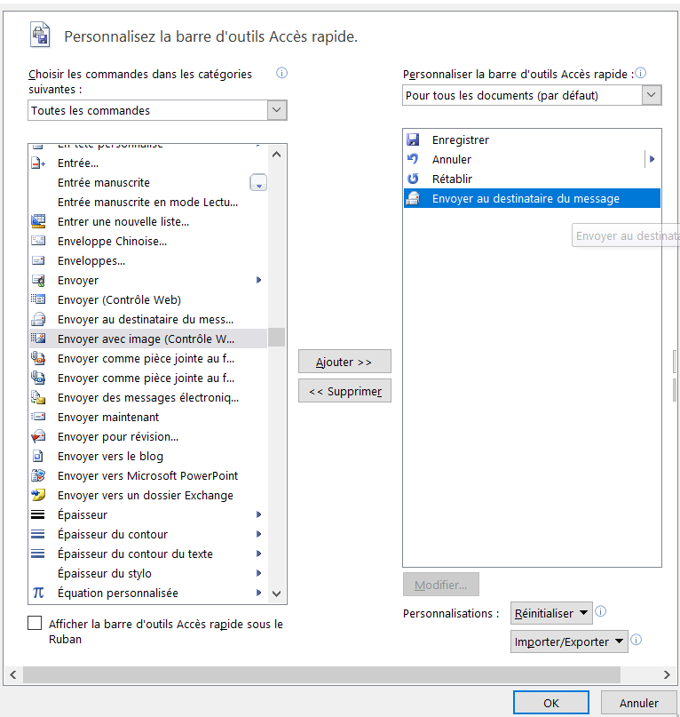
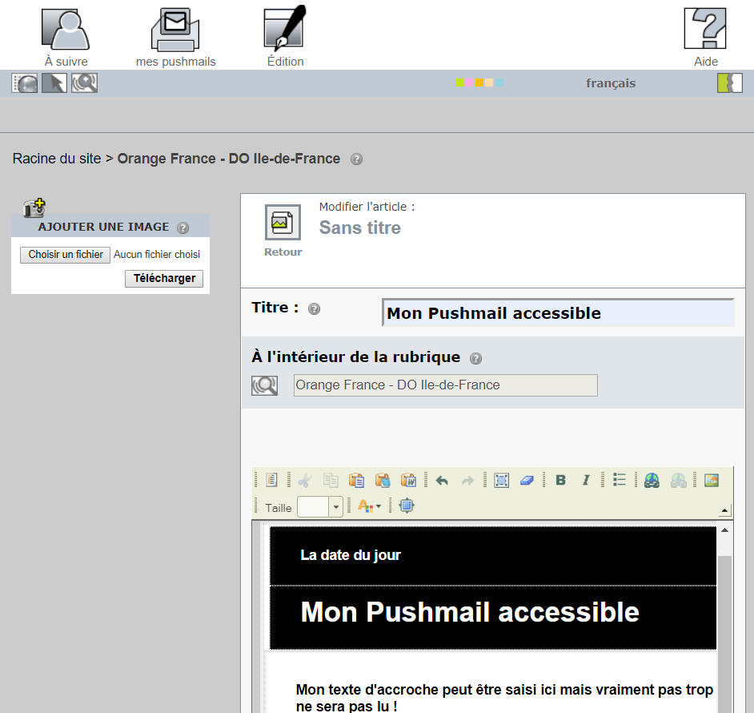

Concevoir des mails accessibles à tous
Faire en sorte que tout le monde reçoive et comprenne vos messages doit être une priorité, peu importe que l’utilisateur utilise ou non des technologies d’assistance.
Les mails « du quotidien »
Qu’est ce qui peut poser problème d’un point de vue accessibilité ?
- Les images
- Les polices, couleurs et styles utilisés
- Les tableaux de mise en forme
- Les liens
Les basiques
Pour tous vos mails du quotidien :
- Utiliser des polices simples, sans serif : Arial, Calibri ou Accessible DfA
- Adopter une taille de police au moins égale à 12 points
- Conserver l’accent des lettres en majuscule
- Aligner les textes à gauche (éviter de justifier)
- Éviter l’italique
- Mettre une majuscule à chaque début de phrase mais éviter les phrases entières en majuscule
- Vérifier le contraste entre la couleur de police et l’arrière-plan (outil Colour Contrast Analyzer) et limiter le nombre total de couleurs utilisées
- Utiliser un fond neutre : pas de papier à lettre décoratif ni d’images d’arrière-plan
- Renseigner un texte de remplacement pour toutes les images (ou alternative textuelle)
- Traduire les émoticônes, exemple : [smiley clin d’oeil]
- Éviter les animations, les GIFs et les flashs
- Utiliser l’outil de signature Orange
- Rédiger des libellés de liens explicites (éviter les liens du type : « cliquer ici » ou « en savoir plus »)
- Vérifier que la taille des boutons et des zones cliquables est suffisante (1cm de côté)
- Paramétrer votre outil mail : format HTML par défaut
Les Pushmails
Plusieurs options s’offrent à vous pour créer un Pushmail accessible.
Création à partir d’un document Word
- Créer un document Word accessible en suivant les recommandations Word.
- Puis utiliser l’option « Envoyer au destinataire du message ».
Option à ajouter la première fois via Fichier > Option > Barre d’outils accès rapide > Envoyer au destinataire du message. 
Création à partir de « Mes Pushmails »
L’outil fournit des gabarits nativement accessibles (à condition d’ajouter du texte de remplacement pour les images) ce qui n’empêche pas de suivre les recommandations générales pour le contenu éditorial.

Création à partir d’HTML (ou autre outil dédié)
Composer le code HTML de façon accessible en suivant les principales recommandations Web. Important : compte tenu des problématiques d’interprétation des multiples clients mail, la mise en page devrait plutôt être faite via des tableaux (en utilisant role=presentation dans la balise table).
La dernière chance
Si la mise en page de votre mail nécessite d’être très complexe :
- créer le mail avec la méthode qui vous est la plus simple,
- et ajouter en pièce jointe un fichier Word accessible (ou fichier texte) contenant le même niveau d’information mais sous forme textuelle uniquement.